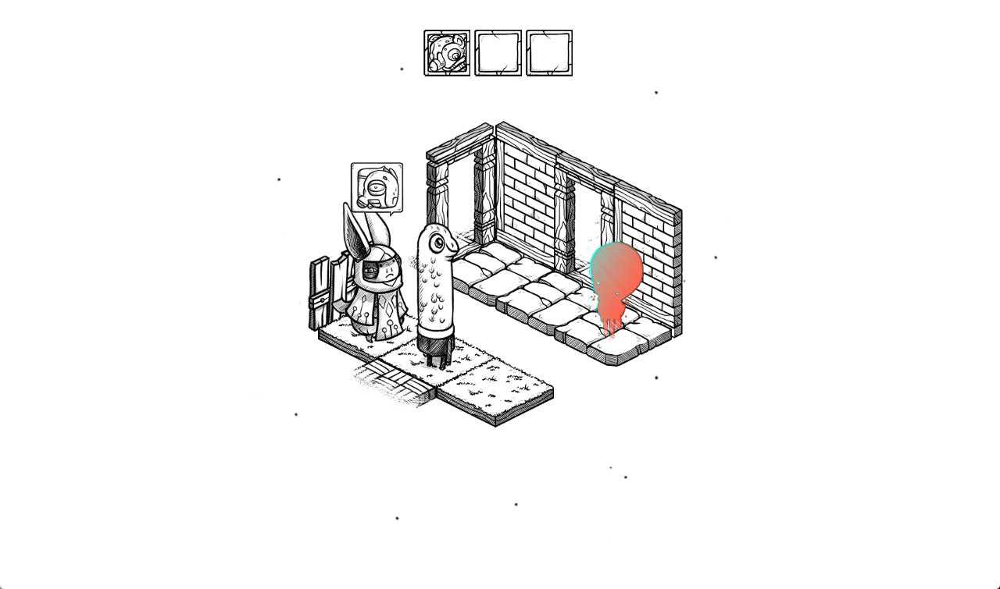
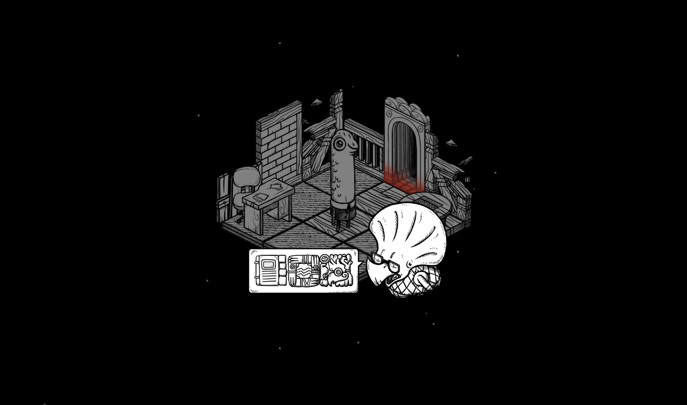
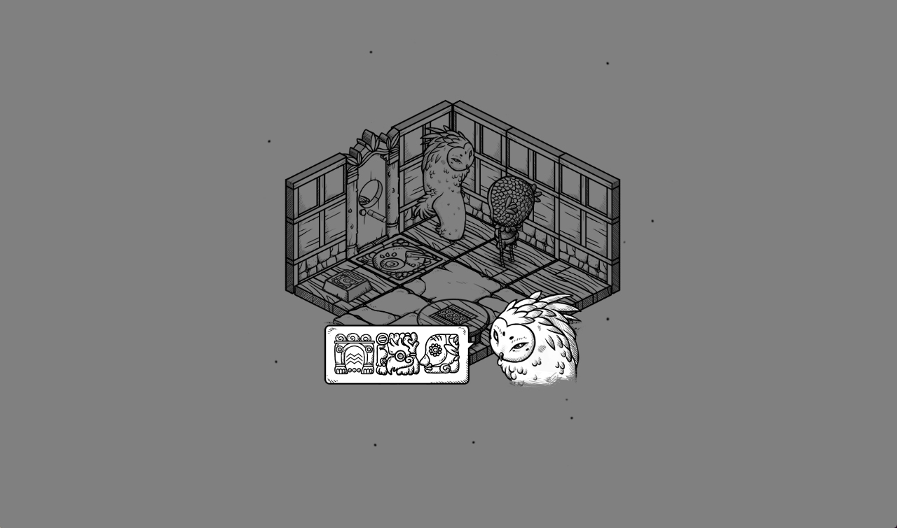
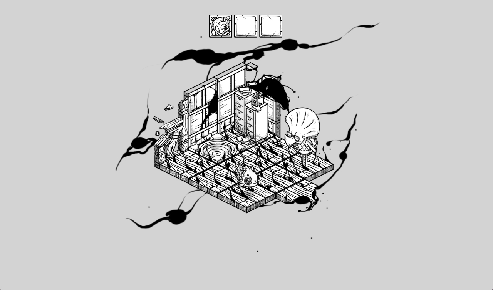

You arrive in a new space, the language is obscure and not known to you; and neither is your purpose in this place.

Why are you here? Where are you going? The only option available to you is to move from one room to another, seemingly forward - or are you going backwards?

You encounter many characters, but not all can help you on your quest. And not all hints you find, are important. An owl appears to be on your side, but a thought occurs to you; even if you did understand the language, would they be telling the truth?

Some doors are locked, you need to change your form to enter. Others, are unlocked, you carry on deeper into the unknown. As you go, and as you change, maybe the letters will become clear to you, but at what cost?

"Its just a strange world, and everything is strange in it. Youre making your way through an Escher drawing, collecting what you need on a path that fights back."
-Zack Kotzer (Kill screen)
"Devine and Rekka have created a world that is both nostalgic and fresh - evoking the fantasy of Lewis Carroll and combining it with inventive match-three gameplay to the point of being indiscernible."
-Antony Stevens (Indie game mag)
Presskit
Video
Description
Oquonie is a textless isometric puzzle game. You will not be alone, your incarnations will have the help of bizaroid characters speaking an obscure language. Oquonie features an original soundtrack and was best described as "Animal Crossing in a K-Hole".
Developer:Hundredrabbits, based somewhere in the pacific ocean.Release date:February 2014Stores:Itch.ioPlatforms:PC, Mac and LinuxPrice:USD $5.00Demo:Send us a request
Credits
Rekka Bellum (kokorobot.ca):Art and animationDevine Lulinvega (xxiivv):Programming, game design and music
"IGF Finalist - Excellence in Visual Art." Independent Games Festival 2015"Monochrome bundle." Humble Bundle 2015."FILE GAMES RIO Oi Futuro Flamengo" Brazil, 2015 and 2017"Archaeology of the Digital: Media and Machines." Canadian centre for architecture, Montreal, 2014